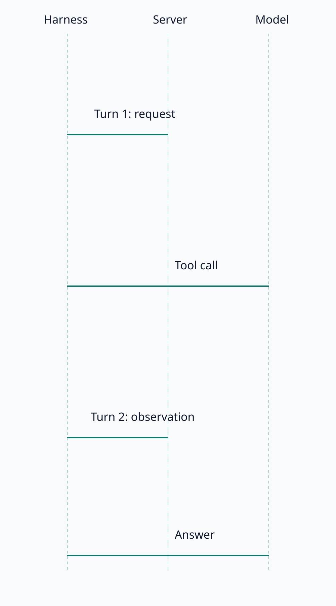

<!doctype html>
<html lang="en">
<meta charset="utf-8">
<link rel="stylesheet" href="../css/antsand-v2.css">
<article data-image-lightbox>
  <figure></figure>
</article>
<output id="result">pending</output>
<script type="module">
  import { initAllImageLightboxes } from '../js_v2/modules/image-lightbox.js';
  const image = document.querySelector('#diagram');
  try {
    await image.decode();
    const [viewer] = initAllImageLightboxes();
    viewer.open(0);
    viewer.setZoom(2, { x: 40, y: 20 });
    viewer.panY += 80;
    viewer._renderTransform();
    const media = viewer._media();
    const stage = viewer.lightbox.querySelector('.antsand-image-lightbox__stage');
    if (viewer.zoom !== 2 || !media.style.transform.includes('scale(2)') || !stage.clientWidth || !media.offsetHeight) {
      throw new Error('Viewer did not render a zoomed SVG');
    }
    document.querySelector('#result').textContent = 'PASS: zoomed SVG ' + media.offsetWidth + 'x' + media.offsetHeight;
  } catch (error) {
    document.querySelector('#result').textContent = 'FAIL: ' + error.message;
  }
</script>
</html>
